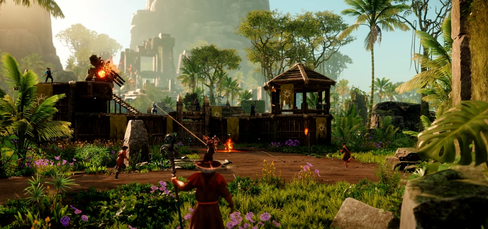
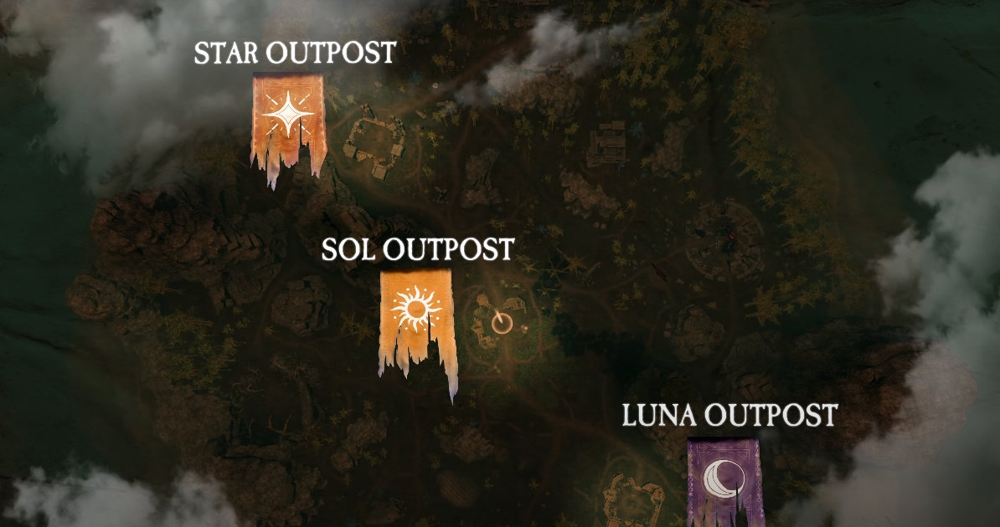
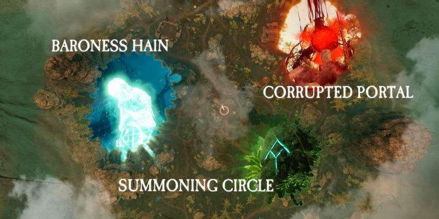
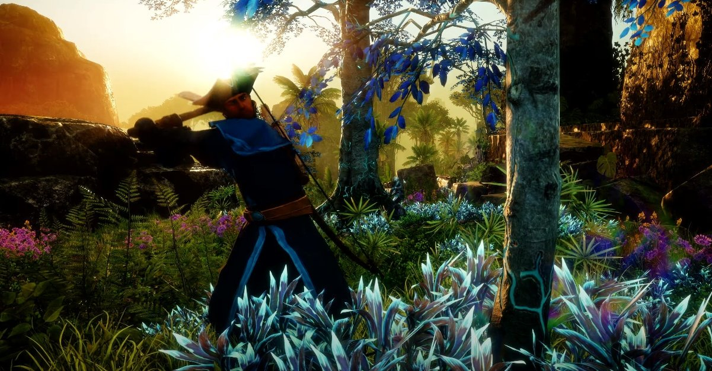
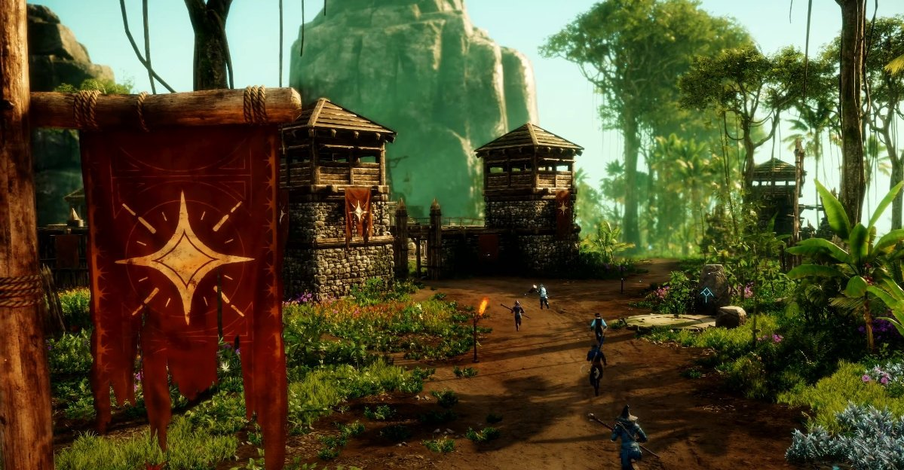

Новий Cвіт: Outpost Rush гайд
Outpost Rush — масштабна PVP-подія в ендшпілі в Новому Світі. Цей посібник охоплює все, що вам потрібно знати про роботу режиму.
Outpost Rush — це масштабна PvP-подія 20 на 20 (з додаванням PvE), доступна для гравців 60-го рівня в New World. Гра іноді з’являється в режимі 16 проти 16, залежно від черги. Outpost Rush поєднує управління ресурсами, об’єктивний контроль і будівництво своїх фортів, щоб протистояти нападам ворожої команди.
Як працює Outpost Rush?
Ви можете зіграти раунд Outpost Rush лише на рівні 60. Просто відвідайте поселення, знайдіть NPC Outpost Rush і поставте в чергу. Коли черга заповниться, запуститься режим.
- Кожна команда починає зі своїх фортець.
- Між двома фортами є три аванпости , які може захопити будь-яка команда: Луна, Сол і Астра.
- Обидві команди намагаються захопити ці аванпости.
- Тримання за форпост принесе очки, а вбивство інших гравців також принесе очки. Перемагає та команда, яка першою набере 1000 очок.
- Нагороди за подію приходять у вигляді косметики Outpost Rush, рідкісних предметів і броні.
Навколо різних аванпостів бої можуть бути дуже напруженими, тому варто взяти з собою гідну PvP збірку. Ось деякі з наших улюблених збірок під час закритого бета-тестування (ми оновимо більше з повним випуском).
Цілі карти
Навколо карти розташовано різні цілі, які може отримати будь-яка команда.
- Ви можете перемогти баронесу Хейн (загалом як барона з League of Legends), що дає вам бафф для відновлення здоров’я та захисту. Вона нереститься кожні 10 хвилин.
- Витратьте ресурси, щоб побудувати вогняні вежі в домашньому форті та на двох форпостах. Ці великі оборонні споруди можна використовувати, щоб стріляти у ворожих гравців, що наближаються.
- Гравці можуть взяти участь у одному зі зіпсованих порталів , перемогти там ворогів і внести Azoth Essence (потрібно 500), який потім можна використати, щоб викликати купу зіпсованих ворогів, щоб надіслати їх на протилежну команду. Вам просто потрібно підійти до порталу виклику та використати тотем.
Це не лише PvP
Якщо ви не любите PvP, є інші способи допомогти своїй команді виграти раунд Outpost Rush. Кожен Outpost має різноманітні функції, які можна вдосконалювати, як-от ворота та облогові зброї, для створення яких потрібні ресурси.
- Infused Hide , зібраний з Wolf Dens і вбивством величезного Альфа-Вовка.
- Infused Ore , унікальні рудні жили забезпечують ресурси для покращення вашого Outpost, але вам потрібно буде перемогти різних зіпсованих ворогів там (і двох міні-босів, Ug і Dug). Якщо ви вб’єте босів, ви отримаєте купу Azoth, щоб витрачати.
- Azoth Essence, один із найважливіших ресурсів у Outpost Rush, Azoth випадає під час бою PvE. Він потрібен вам для доступу до пошкодженого порталу, про який ми згадували вище.
- Infused Wood, ця особлива деревина знаходиться в Стародавніх Гаях, розташованих по всій карті, хоча вони захищені агресивними лісовими істотами.
Поради щодо ігрового процесу
Outpost Rush, мабуть, одна з найприємніших частин Нового Світу. Сподіваємось, у майбутньому він матиме підтримку з новими картами та різними способами гри. Ось кілька порад, які ми підібрали під час закритого бета-тестування.
- Це все про керування картою , схоже на те, що ви граєте в Moba. Насправді це дуже схоже на Moba. Просування до цілей на карті може покращити або зламати гру.
- Комунікація між вашою командою дуже важлива. Деяким слід розділитися, щоб почати вирощувати Азот , збирати ресурси , а іншим слід стрибнути прямо до аванпостів.
- Добре збалансована команда, ймовірно, означатиме перемогу: для перемоги потрібні танки, цілителі, дальнього бою та різні інші збірки для PvP.
- Щоб виконувати будь-які завдання зі збору ресурсів у Outpost Rush, вам не потрібні якісь особливі навички ремесла, але це все одно покращить ваші навички.